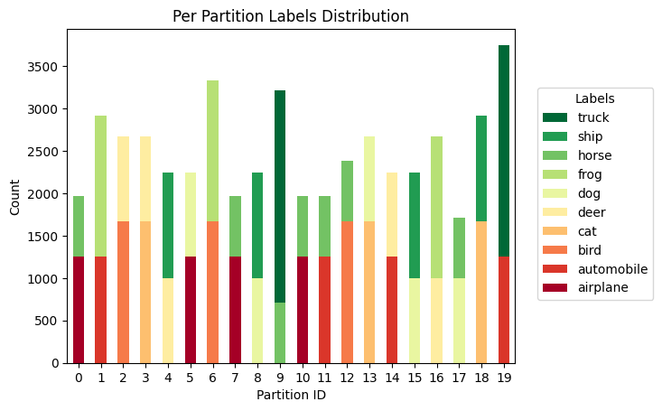
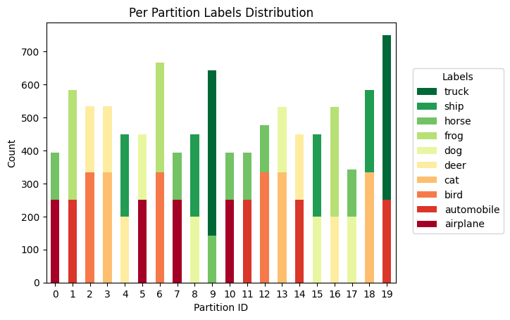
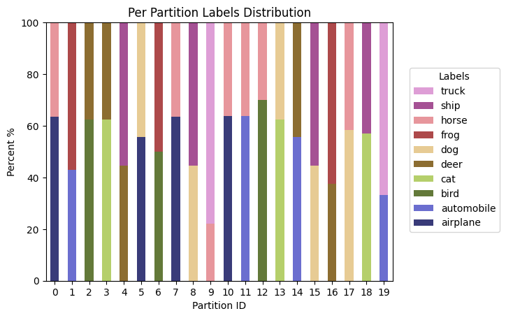
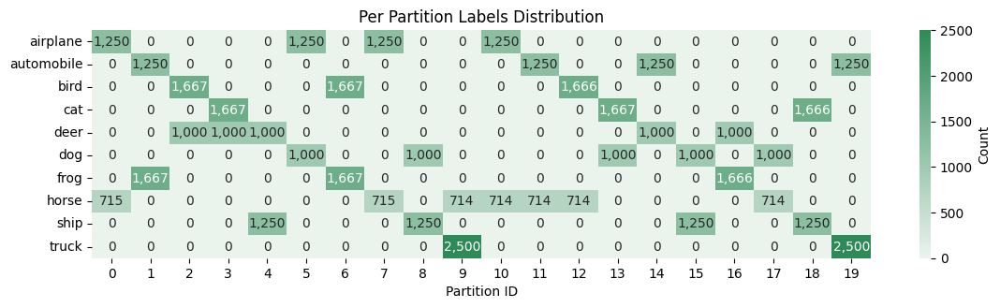
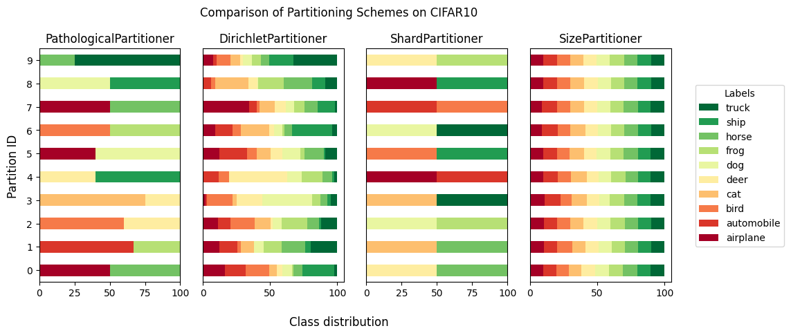

dataset_name = "flwrlabs/femnist"# from flwr_datasets import FederatedDataset
# from flwr_datasets.partitioner import IidPartitioner, DirichletPartitioner
# fds = FederatedDataset(dataset=dataset_name, partitioners={"train": DirichletPartitioner(num_partitions= 20, partition_by="writer_id", alpha=0.1)})
# partition = fds.load_partition(0, "train")# centralized_dataset = fds.load_split("test")# import matplotlib.pyplot as plt
# import numpy as np
# # Simulated example data
# rounds = 10
# accuracies = [0.50, 0.55, 0.60, 0.62, 0.64, 0.66, 0.68, 0.69, 0.70, 0.71] # after each round
# accuracies2 = [0.50, 0.58, 0.68, 0.70, 0.73, 0.75, 0.76, 0.77, 0.80, 0.85] # after each round
# bits_per_round = [5e6] * rounds # assume 5MB per round (e.g., model size = 5MB)
# bits_per_round2 = [5e4] * rounds # assume 5MB per round (e.g., model size = 5MB)
# # Compute cumulative bits transmitted
# cumulative_bits = np.cumsum(bits_per_round)
# cumulative_bits2 = np.cumsum(bits_per_round2)
# # Plot
# plt.figure(figsize=(8, 5))
# plt.plot(accuracies, cumulative_bits / 1e6, marker='o') # divide by 1e6 to show MB
# plt.plot(accuracies2, cumulative_bits2 / 1e6, marker='o') # divide by 1e6 to show MB
# plt.xlabel('Accuracy(%)')
# plt.ylabel('Cumulative bits transmitted (MB)')
# plt.title('Accuracy vs. Cumulative Bits Transmitted')
# plt.grid()
# plt.legend(['Model 1', 'Model 2'])
# plt.yscale('log')
# # plt.yscale('linear')
# # plt.xlim(0.1, 100)
# # plt.ylim(0.4, 1)# from omegaconf import OmegaConf
# cfg = OmegaConf.load("./cfg.yaml")# import os
# from datetime import datetime
# cfg.now = datetime.now().strftime("%Y%m%d_%H%M%S")
# cfg.root_dir = os.path.join(cfg.root_dir, cfg.project_name)
# cfg.save_dir = os.path.join(cfg.root_dir, cfg.now, cfg.save_dir)
# cfg.log_dir = os.path.join(cfg.root_dir, cfg.now, cfg.log_dir)
# cfg.res_dir = os.path.join(cfg.root_dir, cfg.now, cfg.res_dir)
# cfg.num_clients = 1# from fedai.FLearner import client_fn
# from fedai.federated.agents import pFedMe, AgentRole
# client = client_fn(pFedMe, cfg, 22, {}, 1, state_dir= "local_output_")# import torch
# from fedai.FLearner import client_fn
# from fedai.wandb_writer import WandbWriter
# server =pFedMe(cfg= cfg, block= None, id= -1, state= None, role= AgentRole.SERVER) # noqa: F405
# server.server_init(client_fn, "client_selector", pFedMe, torch.nn.CrossEntropyLoss(), WandbWriter(cfg))# for i in range(1, 10):
# server.cfg.agg = cfg.agg = 'mtl'
# client = client_fn(pFedMe, cfg, 0, server.latest_round, i, state_dir= "local_output_")
# server.latest_round[client.id] = i
# client.fit()
# client.communicate(server)
# server.evaluate(i)# client.train_ds[0]['x'].shape# import os
# import torch
# c1 = torch.load('coalitions.pth', weights_only= False)
# c2 = torch.load('coalitions2.pth', weights_only= False)
# c3 = torch.load('coalitions3.pth', weights_only= False)
# c4 = torch.load('coalitions4.pth', weights_only= False)
# c5 = torch.load('coalitions5.pth', weights_only= False)
# c1, c2, c3, c4, c5# coalitions[1]# for col_ind, lst_clients in coalitions.items():
# print(f'Coalition {col_ind}: {lst_clients}')# def read_graphs(n_graphs= 5):
# import pickle
# import networkx as nx
# lst = []
# for i in range(1, n_graphs+1):
# with open(f'graph_{i}.gpickle', 'rb') as f:
# G = pickle.load(f)
# lst.append(G)
# return lst# lst_graphs = read_graphs(5)# import pickle
# import networkx as nx
# with open('graph_1.gpickle', 'rb') as f:
# G = pickle.load(f)# # get the labels of the nodes
# node_labels = nx.get_node_attributes(G, 'label')
# node_labels# # # draw graph
# import matplotlib.pyplot as plt
# import networkx as nx
# plt.figure(figsize=(10,10))
# node_labels = nx.get_node_attributes(lst_graphs[0], 'label')
# labels = [v for k, v in node_labels.items()]
# pos = nx.spring_layout(lst_graphs[0], seed=42) # positions for all nodes
# nx.draw(lst_graphs[0], pos, with_labels=True, labels=node_labels)
# # only take 2 decimal places
# labels = nx.get_edge_attributes(lst_graphs[0],'weight')
# labels = {k:round(v,2) for k,v in labels.items()}
# nx.draw_networkx_edge_labels(lst_graphs[0], pos, edge_labels=labels)
# plt.show()# c1, c2# import networkx as nx
# def build_cluster_graph(graph, cluster_dict):
# node_labels = nx.get_node_attributes(graph, 'label') #{0: 19, 1: 16, 2: 15
# labels_edges = nx.get_edge_attributes(graph,'weight') #{(0, 1): 0.15, (0, 2): 0.04
# labels_edges = {(node_labels[k[0]], node_labels[k[1]]):v for k,v in labels_edges.items()} #{(19, 16): 0.15, (19, 15): 0.04
# labels_edges = {k:round(v,2) for k,v in labels_edges.items()} #{(19, 16): 0.15, (19, 15): 0.04
# weights = {}
# for k, v in labels_edges.items():
# weights[(k[0], k[1])] = v
# weights[(k[1], k[0])] = v
# print(weights)
# G = nx.Graph()
# # Add all nodes
# for cluster_nodes in cluster_dict.values(): # [[10, 7, 2, 14], [0, 5, 18, 16, 12, 4]]
# G.add_nodes_from(cluster_nodes)
# # Add edges to fully connect nodes within each cluster
# for cluster_nodes in cluster_dict.values(): #[[10, 7, 2, 14], [0, 5, 18, 16, 12, 4]]
# for i, u in enumerate(cluster_nodes):
# for v in cluster_nodes[i+1:]:
# G.add_edge(u, v, weight=weights[(u, v)]) # or any default weight
# return G, weights# lst_graphs[1], c1# import matplotlib.pyplot as plt
# import networkx as nx
# G, weights = build_cluster_graph(lst_graphs[1], c2)
# # Assign colors per cluster
# color_map = []
# node_to_cluster = {node: cid for cid, nodes in c2.items() for node in nodes}
# for node in G.nodes():
# if node_to_cluster[node] == 0:
# color_map.append('skyblue')
# else:
# color_map.append('lightgreen')
# # Optional: assign labels (can be custom)
# node_labels = {node: str(node) for node in G.nodes()}
# # Layout and draw
# plt.figure(figsize=(10, 10))
# pos = nx.spring_layout(G, seed=42)
# nx.draw(G, pos, with_labels=True, node_color=color_map, labels=node_labels)
# edge_labels = nx.get_edge_attributes(G, 'weight')
# nx.draw_networkx_edge_labels(G, pos, edge_labels=edge_labels)
# plt.title("Round 2 Coalition Graph")
# plt.axis('off')
# plt.show()# import ujson
# # read the data
# with open('./my_examples/Cifar-10/data/train/cifa_train.json', 'r') as f:
# train_data = ujson.load(f)# train_data["user_data"].keys()# # extract each client data and save it as hdf5 file
# import h5py
# import numpy as np
# import os
# for k, v in train_data["user_data"].items():
# user_data = train_data["user_data"][k]
# with h5py.File(f'./my_examples/Cifar-10/data/train/{k}', 'w') as f:
# f.create_dataset('x', data=np.array(user_data["x"]))
# f.create_dataset('y', data=np.array(user_data["y"]))# classes = ('plane', 'car', 'bird', 'cat',
# 'deer', 'dog', 'frog', 'horse', 'ship', 'truck')Custom Dataset class
# import zipfile
# import torch
# import os
# import gdown
# import h5py
# import numpy as np# from community import community_louvain
# import matplotlib.cm as cm
# import matplotlib.pyplot as plt
# import networkx as nx
# # load the karate club graph
# G = nx.karate_club_graph()
# # compute the best partition
# partition = community_louvain.best_partition(G)
# # draw the graph
# pos = nx.spring_layout(G)
# # color the nodes according to their partition
# cmap = cm.get_cmap('viridis', max(partition.values()) + 1)
# nx.draw_networkx_nodes(G, pos, partition.keys(), node_size=40,
# cmap=cmap, node_color=list(partition.values()))
# nx.draw_networkx_edges(G, pos, alpha=0.5)
# # save as pdf
# plt.savefig("outcome.png")
# plt.show()# # draw the original graph G
# nx.draw(G, with_labels=True)
# plt.savefig("original.png")
# plt.show()Testing the new structure
# from fedai.data import init_data, IMG_DATA_CONFIGS
# from fedai.client_selector import BaseClientSelector
# from fedai.wandb_writer import WandbWriter
# from fedai.utils import init_server, get_criterion
# from omegaconf import OmegaConf
# import torch
# import torch.nn as nn# file = "../../cfgs/main/cifar10/20/pfedme.yaml"
# cfg = OmegaConf.load(file)
# cfg.data.partitioner.kwargs.update({"partition_by": IMG_DATA_CONFIGS[cfg.data.name].y})
# fds = init_data(cfg)# import numpy as np
# for client_idx in range(cfg.num_clients):
# yp = fds.load_partition(client_idx, "train")
# print(np.unique(yp['label'], return_counts=True))--------------------------------------------------------------------------- KeyboardInterrupt Traceback (most recent call last) Cell In[33], line 3 1 import numpy as np 2 for client_idx in range(cfg.num_clients): ----> 3 yp = fds.load_partition(client_idx, "train") 4 print(np.unique(yp['label'], return_counts=True)) File ~/miniconda3/envs/fed/lib/python3.12/site-packages/flwr_datasets/federated_dataset.py:177, in FederatedDataset.load_partition(self, partition_id, split) 149 """Load the partition specified by the idx in the selected split. 150 151 The dataset is downloaded only when the first call to `load_partition` or (...) 174 Single partition from the dataset split. 175 """ 176 if not self._dataset_prepared: --> 177 self._prepare_dataset() 178 if self._dataset is None: 179 raise ValueError("Dataset is not loaded yet.") File ~/miniconda3/envs/fed/lib/python3.12/site-packages/flwr_datasets/federated_dataset.py:314, in FederatedDataset._prepare_dataset(self) 293 def _prepare_dataset(self) -> None: 294 """Prepare the dataset (prior to partitioning) by download, shuffle, replit. 295 296 Run only ONCE when triggered by load_* function. (In future more control whether (...) 312 happen before the resplitting. 313 """ --> 314 self._dataset = datasets.load_dataset( 315 path=self._dataset_name, name=self._subset, **self._load_dataset_kwargs 316 ) 317 if not isinstance(self._dataset, datasets.DatasetDict): 318 raise ValueError( 319 "Probably one of the specified parameter in `load_dataset_kwargs` " 320 "change the return type of the datasets.load_dataset function. " 321 "Make sure to use parameter such that the return type is DatasetDict. " 322 f"The return type is currently: {type(self._dataset)}." 323 ) File ~/miniconda3/envs/fed/lib/python3.12/site-packages/datasets/load.py:2132, in load_dataset(path, name, data_dir, data_files, split, cache_dir, features, download_config, download_mode, verification_mode, keep_in_memory, save_infos, revision, token, streaming, num_proc, storage_options, trust_remote_code, **config_kwargs) 2127 verification_mode = VerificationMode( 2128 (verification_mode or VerificationMode.BASIC_CHECKS) if not save_infos else VerificationMode.ALL_CHECKS 2129 ) 2131 # Create a dataset builder -> 2132 builder_instance = load_dataset_builder( 2133 path=path, 2134 name=name, 2135 data_dir=data_dir, 2136 data_files=data_files, 2137 cache_dir=cache_dir, 2138 features=features, 2139 download_config=download_config, 2140 download_mode=download_mode, 2141 revision=revision, 2142 token=token, 2143 storage_options=storage_options, 2144 trust_remote_code=trust_remote_code, 2145 _require_default_config_name=name is None, 2146 **config_kwargs, 2147 ) 2149 # Return iterable dataset in case of streaming 2150 if streaming: File ~/miniconda3/envs/fed/lib/python3.12/site-packages/datasets/load.py:1853, in load_dataset_builder(path, name, data_dir, data_files, cache_dir, features, download_config, download_mode, revision, token, storage_options, trust_remote_code, _require_default_config_name, **config_kwargs) 1851 download_config = download_config.copy() if download_config else DownloadConfig() 1852 download_config.storage_options.update(storage_options) -> 1853 dataset_module = dataset_module_factory( 1854 path, 1855 revision=revision, 1856 download_config=download_config, 1857 download_mode=download_mode, 1858 data_dir=data_dir, 1859 data_files=data_files, 1860 cache_dir=cache_dir, 1861 trust_remote_code=trust_remote_code, 1862 _require_default_config_name=_require_default_config_name, 1863 _require_custom_configs=bool(config_kwargs), 1864 ) 1865 # Get dataset builder class from the processing script 1866 builder_kwargs = dataset_module.builder_kwargs File ~/miniconda3/envs/fed/lib/python3.12/site-packages/datasets/load.py:1599, in dataset_module_factory(path, revision, download_config, download_mode, dynamic_modules_path, data_dir, data_files, cache_dir, trust_remote_code, _require_default_config_name, _require_custom_configs, **download_kwargs) 1597 try: 1598 _raise_if_offline_mode_is_enabled() -> 1599 dataset_readme_path = api.hf_hub_download( 1600 repo_id=path, 1601 filename=config.REPOCARD_FILENAME, 1602 repo_type="dataset", 1603 revision=revision, 1604 proxies=download_config.proxies, 1605 ) 1606 commit_hash = os.path.basename(os.path.dirname(dataset_readme_path)) 1607 except LocalEntryNotFoundError as e: File ~/miniconda3/envs/fed/lib/python3.12/site-packages/huggingface_hub/utils/_validators.py:89, in validate_hf_hub_args.<locals>._inner_fn(*args, **kwargs) 85 validate_repo_id(arg_value) 87 kwargs = smoothly_deprecate_legacy_arguments(fn_name=fn.__name__, kwargs=kwargs) ---> 89 return fn(*args, **kwargs) File ~/miniconda3/envs/fed/lib/python3.12/site-packages/huggingface_hub/hf_api.py:5608, in HfApi.hf_hub_download(self, repo_id, filename, subfolder, repo_type, revision, cache_dir, local_dir, force_download, etag_timeout, token, local_files_only, tqdm_class, dry_run) 5604 if token is None: 5605 # Cannot do `token = token or self.token` as token can be `False`. 5606 token = self.token -> 5608 return hf_hub_download( 5609 repo_id=repo_id, 5610 filename=filename, 5611 subfolder=subfolder, 5612 repo_type=repo_type, 5613 revision=revision, 5614 endpoint=self.endpoint, 5615 library_name=self.library_name, 5616 library_version=self.library_version, 5617 cache_dir=cache_dir, 5618 local_dir=local_dir, 5619 user_agent=self.user_agent, 5620 force_download=force_download, 5621 etag_timeout=etag_timeout, 5622 token=token, 5623 headers=self.headers, 5624 local_files_only=local_files_only, 5625 tqdm_class=tqdm_class, 5626 dry_run=dry_run, 5627 ) File ~/miniconda3/envs/fed/lib/python3.12/site-packages/huggingface_hub/utils/_validators.py:89, in validate_hf_hub_args.<locals>._inner_fn(*args, **kwargs) 85 validate_repo_id(arg_value) 87 kwargs = smoothly_deprecate_legacy_arguments(fn_name=fn.__name__, kwargs=kwargs) ---> 89 return fn(*args, **kwargs) File ~/miniconda3/envs/fed/lib/python3.12/site-packages/huggingface_hub/file_download.py:1024, in hf_hub_download(repo_id, filename, subfolder, repo_type, revision, library_name, library_version, cache_dir, local_dir, user_agent, force_download, etag_timeout, token, local_files_only, headers, endpoint, tqdm_class, dry_run) 1003 return _hf_hub_download_to_local_dir( 1004 # Destination 1005 local_dir=local_dir, (...) 1021 dry_run=dry_run, 1022 ) 1023 else: -> 1024 return _hf_hub_download_to_cache_dir( 1025 # Destination 1026 cache_dir=cache_dir, 1027 # File info 1028 repo_id=repo_id, 1029 filename=filename, 1030 repo_type=repo_type, 1031 revision=revision, 1032 # HTTP info 1033 endpoint=endpoint, 1034 etag_timeout=etag_timeout, 1035 headers=hf_headers, 1036 token=token, 1037 # Additional options 1038 local_files_only=local_files_only, 1039 force_download=force_download, 1040 tqdm_class=tqdm_class, 1041 dry_run=dry_run, 1042 ) File ~/miniconda3/envs/fed/lib/python3.12/site-packages/huggingface_hub/file_download.py:1099, in _hf_hub_download_to_cache_dir(cache_dir, repo_id, filename, repo_type, revision, endpoint, etag_timeout, headers, token, local_files_only, force_download, tqdm_class, dry_run) 1095 return pointer_path 1097 # Try to get metadata (etag, commit_hash, url, size) from the server. 1098 # If we can't, a HEAD request error is returned. -> 1099 (url_to_download, etag, commit_hash, expected_size, xet_file_data, head_call_error) = _get_metadata_or_catch_error( 1100 repo_id=repo_id, 1101 filename=filename, 1102 repo_type=repo_type, 1103 revision=revision, 1104 endpoint=endpoint, 1105 etag_timeout=etag_timeout, 1106 headers=headers, 1107 token=token, 1108 local_files_only=local_files_only, 1109 storage_folder=storage_folder, 1110 relative_filename=relative_filename, 1111 ) 1113 # etag can be None for several reasons: 1114 # 1. we passed local_files_only. 1115 # 2. we don't have a connection (...) 1121 # If the specified revision is a commit hash, look inside "snapshots". 1122 # If the specified revision is a branch or tag, look inside "refs". 1123 if head_call_error is not None: 1124 # Couldn't make a HEAD call => let's try to find a local file File ~/miniconda3/envs/fed/lib/python3.12/site-packages/huggingface_hub/file_download.py:1691, in _get_metadata_or_catch_error(repo_id, filename, repo_type, revision, endpoint, etag_timeout, headers, token, local_files_only, relative_filename, storage_folder, retry_on_errors) 1689 try: 1690 try: -> 1691 metadata = get_hf_file_metadata( 1692 url=url, 1693 timeout=etag_timeout, 1694 headers=headers, 1695 token=token, 1696 endpoint=endpoint, 1697 retry_on_errors=retry_on_errors, 1698 ) 1699 except RemoteEntryNotFoundError as http_error: 1700 if storage_folder is not None and relative_filename is not None: 1701 # Cache the non-existence of the file File ~/miniconda3/envs/fed/lib/python3.12/site-packages/huggingface_hub/utils/_validators.py:89, in validate_hf_hub_args.<locals>._inner_fn(*args, **kwargs) 85 validate_repo_id(arg_value) 87 kwargs = smoothly_deprecate_legacy_arguments(fn_name=fn.__name__, kwargs=kwargs) ---> 89 return fn(*args, **kwargs) File ~/miniconda3/envs/fed/lib/python3.12/site-packages/huggingface_hub/file_download.py:1614, in get_hf_file_metadata(url, token, timeout, library_name, library_version, user_agent, headers, endpoint, retry_on_errors) 1611 hf_headers["Accept-Encoding"] = "identity" # prevent any compression => we want to know the real size of the file 1613 # Retrieve metadata -> 1614 response = _httpx_follow_relative_redirects( 1615 method="HEAD", url=url, headers=hf_headers, timeout=timeout, retry_on_errors=retry_on_errors 1616 ) 1617 hf_raise_for_status(response) 1619 # Return File ~/miniconda3/envs/fed/lib/python3.12/site-packages/huggingface_hub/file_download.py:302, in _httpx_follow_relative_redirects(method, url, retry_on_errors, **httpx_kwargs) 297 no_retry_kwargs: dict[str, Any] = ( 298 {} if retry_on_errors else {"retry_on_exceptions": (), "retry_on_status_codes": ()} 299 ) 301 while True: --> 302 response = http_backoff( 303 method=method, 304 url=url, 305 **httpx_kwargs, 306 follow_redirects=False, 307 **no_retry_kwargs, 308 ) 309 hf_raise_for_status(response) 311 # Check if response is a relative redirect File ~/miniconda3/envs/fed/lib/python3.12/site-packages/huggingface_hub/utils/_http.py:506, in http_backoff(method, url, max_retries, base_wait_time, max_wait_time, retry_on_exceptions, retry_on_status_codes, **kwargs) 441 def http_backoff( 442 method: HTTP_METHOD_T, 443 url: str, (...) 450 **kwargs, 451 ) -> httpx.Response: 452 """Wrapper around httpx to retry calls on an endpoint, with exponential backoff. 453 454 Endpoint call is retried on exceptions (ex: connection timeout, proxy error,...) (...) 504 > issue on [Github](https://github.com/huggingface/huggingface_hub). 505 """ --> 506 return next( 507 _http_backoff_base( 508 method=method, 509 url=url, 510 max_retries=max_retries, 511 base_wait_time=base_wait_time, 512 max_wait_time=max_wait_time, 513 retry_on_exceptions=retry_on_exceptions, 514 retry_on_status_codes=retry_on_status_codes, 515 stream=False, 516 **kwargs, 517 ) 518 ) File ~/miniconda3/envs/fed/lib/python3.12/site-packages/huggingface_hub/utils/_http.py:414, in _http_backoff_base(method, url, max_retries, base_wait_time, max_wait_time, retry_on_exceptions, retry_on_status_codes, stream, **kwargs) 412 return 413 else: --> 414 response = client.request(method=method, url=url, **kwargs) 415 if not _should_retry(response): 416 yield response File ~/miniconda3/envs/fed/lib/python3.12/site-packages/httpx/_client.py:825, in Client.request(self, method, url, content, data, files, json, params, headers, cookies, auth, follow_redirects, timeout, extensions) 810 warnings.warn(message, DeprecationWarning, stacklevel=2) 812 request = self.build_request( 813 method=method, 814 url=url, (...) 823 extensions=extensions, 824 ) --> 825 return self.send(request, auth=auth, follow_redirects=follow_redirects) File ~/miniconda3/envs/fed/lib/python3.12/site-packages/httpx/_client.py:914, in Client.send(self, request, stream, auth, follow_redirects) 910 self._set_timeout(request) 912 auth = self._build_request_auth(request, auth) --> 914 response = self._send_handling_auth( 915 request, 916 auth=auth, 917 follow_redirects=follow_redirects, 918 history=[], 919 ) 920 try: 921 if not stream: File ~/miniconda3/envs/fed/lib/python3.12/site-packages/httpx/_client.py:942, in Client._send_handling_auth(self, request, auth, follow_redirects, history) 939 request = next(auth_flow) 941 while True: --> 942 response = self._send_handling_redirects( 943 request, 944 follow_redirects=follow_redirects, 945 history=history, 946 ) 947 try: 948 try: File ~/miniconda3/envs/fed/lib/python3.12/site-packages/httpx/_client.py:979, in Client._send_handling_redirects(self, request, follow_redirects, history) 976 for hook in self._event_hooks["request"]: 977 hook(request) --> 979 response = self._send_single_request(request) 980 try: 981 for hook in self._event_hooks["response"]: File ~/miniconda3/envs/fed/lib/python3.12/site-packages/httpx/_client.py:1014, in Client._send_single_request(self, request) 1009 raise RuntimeError( 1010 "Attempted to send an async request with a sync Client instance." 1011 ) 1013 with request_context(request=request): -> 1014 response = transport.handle_request(request) 1016 assert isinstance(response.stream, SyncByteStream) 1018 response.request = request File ~/miniconda3/envs/fed/lib/python3.12/site-packages/httpx/_transports/default.py:250, in HTTPTransport.handle_request(self, request) 237 req = httpcore.Request( 238 method=request.method, 239 url=httpcore.URL( (...) 247 extensions=request.extensions, 248 ) 249 with map_httpcore_exceptions(): --> 250 resp = self._pool.handle_request(req) 252 assert isinstance(resp.stream, typing.Iterable) 254 return Response( 255 status_code=resp.status, 256 headers=resp.headers, 257 stream=ResponseStream(resp.stream), 258 extensions=resp.extensions, 259 ) File ~/miniconda3/envs/fed/lib/python3.12/site-packages/httpcore/_sync/connection_pool.py:256, in ConnectionPool.handle_request(self, request) 253 closing = self._assign_requests_to_connections() 255 self._close_connections(closing) --> 256 raise exc from None 258 # Return the response. Note that in this case we still have to manage 259 # the point at which the response is closed. 260 assert isinstance(response.stream, typing.Iterable) File ~/miniconda3/envs/fed/lib/python3.12/site-packages/httpcore/_sync/connection_pool.py:236, in ConnectionPool.handle_request(self, request) 232 connection = pool_request.wait_for_connection(timeout=timeout) 234 try: 235 # Send the request on the assigned connection. --> 236 response = connection.handle_request( 237 pool_request.request 238 ) 239 except ConnectionNotAvailable: 240 # In some cases a connection may initially be available to 241 # handle a request, but then become unavailable. 242 # 243 # In this case we clear the connection and try again. 244 pool_request.clear_connection() File ~/miniconda3/envs/fed/lib/python3.12/site-packages/httpcore/_sync/connection.py:101, in HTTPConnection.handle_request(self, request) 99 except BaseException as exc: 100 self._connect_failed = True --> 101 raise exc 103 return self._connection.handle_request(request) File ~/miniconda3/envs/fed/lib/python3.12/site-packages/httpcore/_sync/connection.py:78, in HTTPConnection.handle_request(self, request) 76 with self._request_lock: 77 if self._connection is None: ---> 78 stream = self._connect(request) 80 ssl_object = stream.get_extra_info("ssl_object") 81 http2_negotiated = ( 82 ssl_object is not None 83 and ssl_object.selected_alpn_protocol() == "h2" 84 ) File ~/miniconda3/envs/fed/lib/python3.12/site-packages/httpcore/_sync/connection.py:124, in HTTPConnection._connect(self, request) 116 kwargs = { 117 "host": self._origin.host.decode("ascii"), 118 "port": self._origin.port, (...) 121 "socket_options": self._socket_options, 122 } 123 with Trace("connect_tcp", logger, request, kwargs) as trace: --> 124 stream = self._network_backend.connect_tcp(**kwargs) 125 trace.return_value = stream 126 else: File ~/miniconda3/envs/fed/lib/python3.12/site-packages/httpcore/_backends/sync.py:208, in SyncBackend.connect_tcp(self, host, port, timeout, local_address, socket_options) 202 exc_map: ExceptionMapping = { 203 socket.timeout: ConnectTimeout, 204 OSError: ConnectError, 205 } 207 with map_exceptions(exc_map): --> 208 sock = socket.create_connection( 209 address, 210 timeout, 211 source_address=source_address, 212 ) 213 for option in socket_options: 214 sock.setsockopt(*option) # pragma: no cover File ~/miniconda3/envs/fed/lib/python3.12/socket.py:850, in create_connection(address, timeout, source_address, all_errors) 848 if source_address: 849 sock.bind(source_address) --> 850 sock.connect(sa) 851 # Break explicitly a reference cycle 852 exceptions.clear() KeyboardInterrupt:
# from fedai.optimizers import get_optimizer
# get_optimizer(cfg)fedai.optimizers.custom_optimizers.pFedMeOptimizer# yp = fds.load_partition(18, "train")Warning: You are sending unauthenticated requests to the HF Hub. Please set a HF_TOKEN to enable higher rate limits and faster downloads.# ypDataset({
features: ['img', 'label'],
num_rows: 2916
})# import numpy as np
# np.unique(yp['label'])array([3, 8])# from flwr_datasets.visualization import plot_label_distributions
# fig, ax, df = plot_label_distributions(
# partitioner,
# label_name="label",
# plot_type="bar",
# size_unit="absolute",
# partition_id_axis="x",
# legend=True,
# verbose_labels=True,
# title="Per Partition Labels Distribution",
# )
# yyp = fds.load_partition(18, "test")# from flwr_datasets.visualization import plot_label_distributions
# fig, ax, df = plot_label_distributions(
# test_partitioner,
# label_name="label",
# plot_type="bar",
# size_unit="absolute",
# partition_id_axis="x",
# legend=True,
# verbose_labels=True,
# title="Per Partition Labels Distribution",
# )
# fig, ax, df = plot_label_distributions(
# partitioner,
# label_name="label",
# plot_type="bar",
# size_unit="percent",
# partition_id_axis="x",
# legend=True,
# verbose_labels=True,
# cmap="tab20b",
# title="Per Partition Labels Distribution",
# )
# fig, ax, df = plot_label_distributions(
# partitioner,
# label_name="label",
# plot_type="heatmap",
# size_unit="absolute",
# partition_id_axis="x",
# legend=True,
# verbose_labels=True,
# title="Per Partition Labels Distribution",
# plot_kwargs={"annot": True},
# )
# df.style.background_gradient(axis=None, cmap="Greens", vmin=0)| airplane | automobile | bird | cat | deer | dog | frog | horse | ship | truck | |
|---|---|---|---|---|---|---|---|---|---|---|
| Partition ID | ||||||||||
| 0 | 1250 | 0 | 0 | 0 | 0 | 0 | 0 | 715 | 0 | 0 |
| 1 | 0 | 1250 | 0 | 0 | 0 | 0 | 1667 | 0 | 0 | 0 |
| 2 | 0 | 0 | 1667 | 0 | 1000 | 0 | 0 | 0 | 0 | 0 |
| 3 | 0 | 0 | 0 | 1667 | 1000 | 0 | 0 | 0 | 0 | 0 |
| 4 | 0 | 0 | 0 | 0 | 1000 | 0 | 0 | 0 | 1250 | 0 |
| 5 | 1250 | 0 | 0 | 0 | 0 | 1000 | 0 | 0 | 0 | 0 |
| 6 | 0 | 0 | 1667 | 0 | 0 | 0 | 1667 | 0 | 0 | 0 |
| 7 | 1250 | 0 | 0 | 0 | 0 | 0 | 0 | 715 | 0 | 0 |
| 8 | 0 | 0 | 0 | 0 | 0 | 1000 | 0 | 0 | 1250 | 0 |
| 9 | 0 | 0 | 0 | 0 | 0 | 0 | 0 | 714 | 0 | 2500 |
| 10 | 1250 | 0 | 0 | 0 | 0 | 0 | 0 | 714 | 0 | 0 |
| 11 | 0 | 1250 | 0 | 0 | 0 | 0 | 0 | 714 | 0 | 0 |
| 12 | 0 | 0 | 1666 | 0 | 0 | 0 | 0 | 714 | 0 | 0 |
| 13 | 0 | 0 | 0 | 1667 | 0 | 1000 | 0 | 0 | 0 | 0 |
| 14 | 0 | 1250 | 0 | 0 | 1000 | 0 | 0 | 0 | 0 | 0 |
| 15 | 0 | 0 | 0 | 0 | 0 | 1000 | 0 | 0 | 1250 | 0 |
| 16 | 0 | 0 | 0 | 0 | 1000 | 0 | 1666 | 0 | 0 | 0 |
| 17 | 0 | 0 | 0 | 0 | 0 | 1000 | 0 | 714 | 0 | 0 |
| 18 | 0 | 0 | 0 | 1666 | 0 | 0 | 0 | 0 | 1250 | 0 |
| 19 | 0 | 1250 | 0 | 0 | 0 | 0 | 0 | 0 | 0 | 2500 |
# from flwr_datasets import FederatedDataset
# from flwr_datasets.partitioner import (
# IidPartitioner,
# DirichletPartitioner,
# ShardPartitioner,
# PathologicalPartitioner,
# SizePartitioner,
# )
# partitioner_list = []
# title_list = ["PathologicalPartitioner", "DirichletPartitioner", "ShardPartitioner", "SizePartitioner"]
# ## IidPartitioner
# fds = FederatedDataset(
# dataset="cifar10",
# partitioners={
# "train": PathologicalPartitioner(num_partitions=10, partition_by="label", num_classes_per_partition= 2, class_assignment_mode= "first-deterministic"),
# },
# )
# partitioner_list.append(fds.partitioners["train"])
# ## DirichletPartitioner
# fds = FederatedDataset(
# dataset="cifar10",
# partitioners={
# "train": DirichletPartitioner(
# num_partitions=10,
# partition_by="label",
# alpha=1.0,
# min_partition_size=0,
# ),
# },
# )
# partitioner_list.append(fds.partitioners["train"])
# ## ShardPartitioner
# fds = FederatedDataset(
# dataset="cifar10",
# partitioners={
# "train": ShardPartitioner(
# num_partitions=10, partition_by="label", num_shards_per_partition=2
# )
# },
# )
# partitioner_list.append(fds.partitioners["train"])
# ## SizePartitioner
# fds = FederatedDataset(
# dataset="cifar10",
# partitioners={
# "train": SizePartitioner(
# partition_sizes = [5300, 3921, 11156, 256, 1000, 1782, 1000, 1444, 19388, 4753]
# )
# },
# )
# partitioner_list.append(fds.partitioners["train"])Warning: You are sending unauthenticated requests to the HF Hub. Please set a HF_TOKEN to enable higher rate limits and faster downloads.# # generate a list that sums to 50000 with 10 elements and ensure that there are three items < 1000
# import random
# def generate_partition_sizes(total_size=50000, num_partitions=10, num_small=3, small_size=1000):
# if num_small > num_partitions:
# raise ValueError("num_small must be less than or equal to num_partitions")
# # Start with the small partitions
# partition_sizes = [small_size] * num_small
# remaining_size = total_size - sum(partition_sizes)
# remaining_partitions = num_partitions - num_small
# # Generate random sizes for the remaining partitions
# for _ in range(remaining_partitions):
# size = random.randint(1, remaining_size - (remaining_partitions - 1)) # Ensure enough size left for remaining partitions
# partition_sizes.append(size)
# remaining_size -= size
# remaining_partitions -= 1
# # Shuffle the partition sizes to avoid any order bias
# random.shuffle(partition_sizes)
# return partition_sizes
# partition_sizes = generate_partition_sizes()
# print(partition_sizes)[205, 1000, 1000, 14, 6418, 11947, 1, 1997, 1000, 26401]sum([5300, 3921, 11156, 256, 1000, 1782, 1000, 1444, 19388, 4753])50000# from flwr_datasets.visualization import plot_comparison_label_distribution
# fig, axes, df_list = plot_comparison_label_distribution(
# partitioner_list=partitioner_list,
# label_name="label",
# subtitle="Comparison of Partitioning Schemes on CIFAR10",
# titles=title_list,
# legend=True,
# verbose_labels=True,
# )/home/ahmed/miniconda3/envs/fed/lib/python3.12/site-packages/flwr_datasets/visualization/comparison_label_distribution.py:222: UserWarning: The figure layout has changed to tight
fig.tight_layout()
# client_selector = BaseClientSelector(cfg)
# criterion = get_criterion(None)
# cfg.now = "2525156156"
# writer = WandbWriter(cfg)wandb: WARNING If you're specifying your api key in code, ensure this code is not shared publicly. wandb: WARNING Consider setting the WANDB_API_KEY environment variable, or running `wandb login` from the command line. wandb: [wandb.login()] Using explicit session credentials for https://api.wandb.ai. wandb: Appending key for api.wandb.ai to your netrc file: /home/ahmed/.netrc wandb: Currently logged in as: ahmed-elbakary (edge-ai-team) to https://api.wandb.ai. Use `wandb login --relogin` to force relogin
Tracking run with wandb version 0.24.2
Run data is saved locally in
/home/ahmed/Ahmed-home/2- Areas/Research/FL/fedai/nbs/examples/wandb/run-20260224_133948-1d4u27la
View project at https://wandb.ai/edge-ai-team/main_cifar10_20clients
# server = init_server(algo_name= cfg.algorithm,
# config= cfg,
# selector= client_selector,
# criterion= criterion,
# fds= fds,
# writer= writer)# print(server.state_mgr.registry)
# print(server.state_mgr.registered_ids){}
[]# import time
# type(time.strftime("%Y%m%d_%H%M%S", time.localtime()))str# id = 0; t = 1
# client_state = server.state_mgr.get_state(id)
# print(client_state)
# client = server.client_fn(id= id, comm_round= t, client_state= client_state)# def test_labels_consistency(t= 1):
# for client_idx in range(server.cfg.num_clients):
# client_state = server.state_mgr.get_state(client_idx)
# client = server.client_fn(id= client_idx, comm_round= t, client_state= client_state)
# train_labels = set()
# for batch in client.train_loader:
# train_labels.update(batch[client.label_key].tolist())
# test_labels = set()
# for batch in client.test_loader:
# test_labels.update(batch[client.label_key].tolist())
# assert train_labels == test_labels, f"Client {client_idx} has different labels in train and test datasets"# test_labels_consistency()